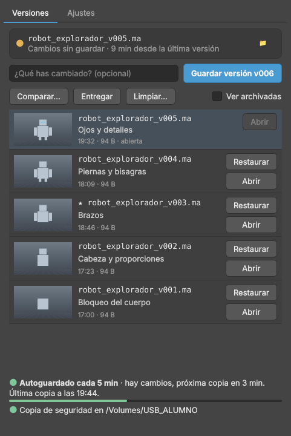
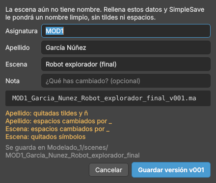

SimpleSave
Versiones con nota y miniatura, autoguardado configurable y recuperación.
v1.0.0Estante: Siempre a manogithub.com/adrianmantilla/simplesave
SimpleSave guarda tu escena de Maya por versiones (robot_v001.ma, robot_v002.ma…) con una nota y una miniatura, hace copias automáticas cuando has cambiado algo y te ofrece recuperar el trabajo si Maya se cierra de golpe.


La idea es sencilla: nunca se sobrescribe una versión. Guardar, restaurar o recuperar siempre crea un archivo nuevo, así que no puedes perder lo que ya tenías por equivocarte de botón.
En pocas palabras#
- Guardar versión con un atajo (
Ctrl+Alt+S, o⌘+Alt+Sen Mac): crea la siguiente versión libre con una nota de qué has cambiado y una miniatura del visor. - Nombre guiado: si la escena no tiene nombre, te pide los datos y te enseña el nombre limpio (sin tildes, ñ, espacios ni símbolos) antes de guardar.
- Autoguardado cada pocos minutos, solo si la escena ha cambiado, en una carpeta aparte y sin tocar tus versiones.
- Recuperar el trabajo tras un cierre inesperado, como versión nueva.
- Copia de seguridad en un USB o en la nube, Entregar en un .zip con las texturas, Comparar versiones y Limpiar las antiguas sin borrar nada.
Dónde está#
En MantiTools, SimpleSave está en el estante MantiTools, en el último grupo, junto a Radial.
- Clic en el icono: Guardar versión (la orden principal: guardar es lo que más vas a hacer).
- Clic derecho en el icono: órdenes rápidas Ver versiones (abre el panel), Recuperar autoguardado y Comparar versiones.
- Menú MantiTools → SimpleSave:
- Guardar versión (Ctrl+Alt+S) (en Mac pone ⌘+Alt+S).
- Panel de versiones.
- Recuperar trabajo…
- Comparar versiones…, Preparar entrega y Limpiar versiones antiguas…
- Asignar atajo Ctrl+Alt+S.
- Crear simplesave.json del profesor.
- Al final, la versión (SimpleSave 1.0.0).
- MantiTools → Ajustes… → SimpleSave: autoguardado, versiones y copia de seguridad (lo ves en Ajustes).
El panel es un panel de Maya: se abre flotando y lo puedes acoplar junto al visor o al Outliner. Para el Editor de atajos de Maya hay tres órdenes en Custom Scripts › SimpleSave: SimpleSaveGuardarVersion, SimpleSavePanel (abre o cierra el panel) y SimpleSaveRecuperar.
SimpleSave se pone en marcha al abrir Maya. El autoguardado está encendido desde el primer momento, aunque no abras el panel.
Primeros pasos#
Vas a guardar las dos primeras versiones de una escena nueva.
- Abre Maya y fija tu proyecto (File → Set Project). SimpleSave guarda dentro de la carpeta
scenesdel proyecto. - Crea algo en la escena, por ejemplo un cubo.
- Pulsa
Ctrl+Alt+S(en Mac⌘+Alt+S), o haz clic en el icono de SimpleSave del estante. - Como la escena no tiene nombre, se abre Guardar escena nueva. Escribe el nombre en Escena (por ejemplo «Robot explorador») y, si quieres, una Nota («bloqueo del cuerpo»).
- Mira el recuadro con el nombre final:
Robot_explorador_v001.ma. Debajo te dice qué ha corregido y dónde se guarda. - Pulsa Guardar versión v001. En el visor aparece Guardada Robot_explorador_v001.ma.
- Sigue trabajando: mueve el cubo, añade otro objeto.
- Abre el panel (clic derecho en el icono → Ver versiones). Escribe en ¿Qué has cambiado? (opcional) algo como «cabeza» y pulsa Guardar versión v002.
Ya tienes dos versiones en la lista, cada una con su miniatura y su nota. A partir de aquí, guarda versión cada vez que termines una parte.
Guardar versión#
Guardar versión guarda la escena abierta como la siguiente versión libre: si estás en robot_v004.ma, crea robot_v005.ma. Puedes hacerlo de cuatro formas:
- El atajo
Ctrl+Alt+S(⌘+Alt+Sen Mac). - El icono de SimpleSave en el estante MantiTools.
- MantiTools → SimpleSave → Guardar versión.
- El botón azul del panel, que siempre dice qué número va a crear (Guardar versión v006).
Con cada versión se guarda:
- La nota que escribas en ¿Qué has cambiado? (opcional). Es opcional, pero dentro de una semana agradecerás saber qué hiciste en cada una.
- Una miniatura del visor (si está activado en Ajustes).
- La hora, el tamaño y la lista de objetos y caras de la escena (para poder Comparar después).
Si ya existe un archivo con ese número (por ejemplo, porque lo copiaste tú a mano), SimpleSave salta al siguiente: nunca pisa nada.
Ctrl+S sigue haciendo lo de siempre: guarda encima del archivo que tienes abierto. SimpleSave no lo cambia, y lo cuenta como guardado para el autoguardado.
Guardado comprobado#
Después de guardar, SimpleSave comprueba que el archivo está completo y se puede leer como escena de Maya. Si algo falla a medias (por ejemplo, el disco se llena), borra el archivo roto y la versión anterior queda intacta. Si el archivo se guardó pero no parece completo, te avisa para que pruebes otra vez.
El atajo#
Al ponerse en marcha la primera vez, SimpleSave asigna Ctrl+Alt+S (⌘+Alt+S en Mac) a Guardar versión, si esa combinación está libre. Como el juego de atajos de fábrica de Maya no se puede modificar, crea una copia llamada SimpleSave_atajos y la deja activa.
Si el atajo estaba ocupado por otra orden, Asignar atajo te dice cuál lo usa. Puedes poner otra tecla en Windows → Configuración → Editor de atajos, buscando «SimpleSave».
Nombre guiado#
La primera vez que guardas una escena sin nombre, SimpleSave te pide los datos para formar el nombre según la plantilla. Por defecto la plantilla es solo {escena}, así que solo te pide el nombre de la escena. Si tu profesor ha puesto otra, te pedirá también, por ejemplo, la asignatura y el apellido.


Escribe con normalidad. SimpleSave:
- Quita las tildes y la ñ (García Núñez →
Garcia_Nunez). - Cambia los espacios por
_. - Quita los símbolos (paréntesis, comas, puntos…).
- Te enseña en naranja cada corrección, en rojo los campos que faltan y en verde Nombre válido tal cual. cuando no ha hecho falta tocar nada.
- Te dice Se guarda en qué carpeta.
La primera versión se guarda en una carpeta propia dentro de scenes: scenes/<nombre>/<nombre>_v001.ma. SimpleSave recuerda lo que escribes (apellido, asignatura…) para proponértelo en la siguiente escena nueva. Los campos que fija el profesor salen rellenos y no se pueden cambiar.
Si la escena ya tenía nombre antes de usar SimpleSave (por ejemplo scenes/casa.ma), no te pregunta nada: las versiones se guardan al lado, como casa_v001.ma.
El panel de versiones#
El panel tiene dos pestañas: Versiones y Ajustes.
La cabecera#
Arriba ves el nombre de la escena abierta y su estado, con un punto de color:
- Punto verde: Guardado · sin cambios (o Todavía sin guardar si la escena es nueva).
- Punto naranja: Cambios sin guardar y, si ha pasado más de un minuto, cuánto llevas desde la última versión.
El botón de la carpeta abre en el Finder o el Explorador la carpeta de la escena.
Debajo están el campo de nota, el botón Guardar versión y la fila de herramientas: Comparar…, Entregar, Limpiar… y la casilla Ver archivadas.
La lista#
Cada versión muestra su miniatura, el nombre del archivo, la nota (o sin nota) y una línea con la hora, el tamaño y, si toca, abierta, archivada o viene de v003 (cuando se restauró de otra). Las marcadas como importantes llevan una estrella delante del nombre.
Los botones de cada versión:
- Abrir: abre esa versión. Si la escena tiene cambios, primero te pregunta.
- Restaurar: copia esa versión como versión nueva y la abre. No se borra ni se sustituye nada.
- Devolver (solo en las archivadas): la saca de la carpeta
archivoy la vuelve a poner con las demás.
La versión que tienes abierta sale resaltada y su botón Abrir está apagado.
Clic derecho en una versión#
- Abrir y Restaurar como versión nueva.
- Editar nota…: cambia la nota cuando quieras.
- Importante (no se aparta al limpiar): márcala para que Limpiar nunca la mueva. Ideal para las versiones que has entregado o que te gustaron.
- Comparar con la abierta…
- Mostrar en la carpeta y Copiar ruta.
Si tienes cambios sin guardar#
Cuando vas a abrir, restaurar o recuperar otra versión y la escena tiene cambios, SimpleSave pregunta: La escena tiene cambios sin guardar. ¿Guardas una versión antes? Puedes elegir Guardar versión, No guardar o Cancelar.
Restaurar#
Restaurar no vuelve atrás en el tiempo: hace una copia de la versión vieja con el número siguiente y la abre. Si restauras la v003 cuando tienes hasta la v005, se crea la v006 con la nota Restaurada de v003, y la v004 y la v005 siguen ahí. Así puedes volver a una idea anterior sin perder lo que hiciste después.
El pie: autoguardado y copia#
Abajo del panel ves el estado del autoguardado: Autoguardado cada 5 min, si hay cambios, próxima copia en N min. o nada que guardar, la escena no ha cambiado., y Última copia a las HH:MM. Una barra se va llenando hasta la siguiente copia.
Si tienes activada la copia de seguridad, otra línea dice Copia de seguridad en y la carpeta (punto verde) o avisa si no encuentra la carpeta.
Autoguardado#
El autoguardado hace una copia de la escena cada pocos minutos (5 por defecto), solo si la escena ha cambiado. Funciona así:
- Las copias van a una carpeta oculta, nunca encima de tus versiones:
.simplesave/<escena>/autoguardado/<escena>_auto_AAAAMMDD_HHMMSS.ma. - Se quedan solo las últimas copias (5 por defecto); las más antiguas se borran solas.
- Espera a que Maya esté libre: nunca guarda a mitad de un arrastre.
- No guarda mientras se reproduce la animación (si lo dejas activado).
- No cambia el nombre de la escena ni quita el aviso de cambios pendientes de Maya: la copia no cuenta como «guardar».
- Si una copia falla, te avisa en el Script Editor y lo vuelve a intentar en el siguiente intervalo.
Las escenas que aún no tienen nombre también se autoguardan, en scenes/.simplesave/sin_titulo/autoguardado/. Cuando guardas su primera versión, esas copias se borran porque ya no hacen falta.
el autoguardado te protege de un cierre inesperado, pero no sustituye a las versiones. Las copias automáticas rotan y las antiguas desaparecen. Lo que quieras conservar, guárdalo como versión.
El recordatorio#
Si pasan 30 minutos (por defecto) con cambios y sin guardar versión, aparece un mensaje discreto en el visor: Llevas N min sin guardar versión. con el atajo. Lo puedes desactivar o cambiar el tiempo en la pestaña Ajustes del panel (Recordar guardar versión tras).
Recuperar trabajo#
Si Maya se cierra sin guardar, no pierdes el trabajo de las copias automáticas.
- Al abrir una escena, si tiene un autoguardado más reciente que su última versión, SimpleSave te lo ofrece: Hay un autoguardado de hoy a las HH:MM, más reciente que tu última versión v004.
- Al arrancar Maya, comprueba la última escena con la que trabajaste y te ofrece lo mismo.
- Pulsa Recuperar como v005 y la copia se guarda como versión nueva (con la nota Recuperada del autoguardado de las HH:MM) y se abre. La última versión no se toca. Si prefieres no hacerlo, pulsa Ahora no.
SimpleSave también busca:
- La copia de emergencia que Maya deja en la carpeta temporal del sistema cuando se cuelga (de los últimos 7 días).
- Las copias de escenas que nunca llegaron a tener nombre.
Si encuentra alguna, abre Trabajo sin guardar con la lista. Elige una y pulsa Abrir: se abre y SimpleSave te pide el nombre para guardarla como versión. Mostrar en la carpeta te lleva al archivo, y No, gracias hace que no vuelva a avisar de esas copias (siguen en su carpeta).
Puedes buscar tú en cualquier momento con Recuperar trabajo… (o Recuperar autoguardado en el clic derecho del icono). Si no hay nada más nuevo que tu última versión, te lo dice.
Copia de seguridad#
Si activas Copiar cada versión también a otra carpeta y eliges una carpeta (un USB, Google Drive, OneDrive…), cada versión que guardes se copia también allí, ordenada como <carpeta>/<proyecto>/<escena>/<archivo>. Las restauradas y recuperadas también.
Si la carpeta no está (el USB no está conectado), la versión se guarda igual en el ordenador y SimpleSave te avisa: No encuentro la carpeta de copia… ¿Está conectado el USB? La versión sí se guardó. El pie del panel lo marca con un punto rojo o naranja.
Comparar versiones#
Comparar… abre dos versiones lado a lado, cada una con su desplegable y su miniatura. Por defecto elige las dos últimas; desde el clic derecho de una versión, Comparar con la abierta… la enfrenta a la que tienes abierta.
Debajo verás:
- Un resumen: N objetos añadidos, M borrados y las caras de una y otra (por ejemplo «caras: 1.200 → 1.850 (+650)»).
- La lista de objetos añadidos (con
+, en verde) y borrados (con−, en rojo). - Los mismos objetos en las dos versiones. si no hay diferencias de objetos.
El botón Comparar… se activa cuando la escena tiene al menos dos versiones. Para versiones .ma antiguas sin esa información, SimpleSave lee los objetos del propio archivo; con .mb antiguos no puede.
Entregar#
Entregar (o Preparar entrega en el menú) prepara tu trabajo para el profesor a partir de la última versión:
- Copia esa versión como
<nombre>_entrega.maen la carpeta de entregas del proyecto (entregaspor defecto). - Crea
<nombre>_entrega.zipcon forma de proyecto de Maya: la escena enscenes/, elworkspace.mely las texturas ensourceimages/, incluidas las series UDIM. - Te enseña un resumen con lo que ha hecho y el botón Mostrar en la carpeta.
Las texturas que estaban fuera del proyecto también entran, en sourceimages/externas dentro del .zip, y SimpleSave te avisa para que revises sus rutas. Si alguna textura no se encuentra, te da la lista.
antes de entregar, guarda una última versión con la nota «entrega» y márcala como importante. Si tus texturas están fuera del proyecto, muévelas a sourceimages (con Materials, Texturas → Copiar al proyecto) y vuelve a entregar.
Limpiar versiones antiguas#
Con muchas versiones, la lista se hace larga. Limpiar… aparta las versiones antiguas a la carpeta archivo, junto a las demás. Siempre se quedan:
- La primera versión.
- Las últimas (5 por defecto; se cambia en Al limpiar, conservar).
- Las marcadas como importantes.
- La que tienes abierta.
Antes de mover nada te dice qué versiones va a apartar y te pregunta. No se borra nada: marca Ver archivadas para verlas en la lista (con fondo más oscuro) y pulsa Devolver para sacar una del archivo.
Para el profesor: simplesave.json#
El profesor puede dejar un archivo simplesave.json en la carpeta del proyecto de Maya. Lo que ponga ahí manda sobre los ajustes de los alumnos de ese proyecto y aparece bloqueado en su panel, con el aviso Algunos ajustes los fija el profesor en … y no se pueden cambiar aquí.; lo que no ponga lo elige cada uno.
MantiTools → SimpleSave → Crear simplesave.json del profesor crea uno de ejemplo en el proyecto actual (si no existe) y te lo enseña en la carpeta:
{
"plantilla": "{asignatura}_{apellido}_{escena}",
"valores": {"asignatura": "MOD1"},
"autoguardado": true,
"minutos": 5,
"copias": 5,
"aviso_minutos": 30,
"formato": "ma",
"carpeta_entregas": "entregas"
}| Clave | Qué es |
|---|---|
plantilla | Piezas entre llaves. {escena} siempre está. Valen otras como {apellido}, {nombre}, {asignatura}, {ejercicio}, {curso}, {grupo}. |
valores | Piezas que rellena el profesor y el alumno no puede cambiar. |
autoguardado, minutos, copias | Autoguardado encendido, cada cuántos minutos (1-120) y cuántas copias guardar (1-50). |
pausa_reproduccion | No autoguardar mientras se reproduce la animación. |
aviso, aviso_minutos | Recordatorio de guardar versión y cada cuánto (5-240 minutos). |
formato | "ma" o "mb". |
miniaturas | Guardar miniatura del visor con cada versión. |
copia_activada, copia_carpeta | Copia de seguridad a otra carpeta. |
carpeta_entregas, conservar_ultimas | Carpeta de entregas dentro del proyecto y versiones que se quedan al limpiar. |
Edítalo con cualquier editor de texto. Más sobre preparar el aula en Profesor.
Ajustes#
En la ventana central de MantiTools#
En MantiTools → Ajustes… → SimpleSave tienes lo principal:
Autoguardado
- Autoguardado activado: enciende o apaga las copias automáticas.
- Cada: cada cuántos minutos (de 1 a 120; 5 por defecto). Entre 5 y 10 está bien: menos puede interrumpir en escenas pesadas.
- Copias que guarda: cuántas copias automáticas se quedan (de 1 a 50; 5 por defecto).
- No guardar mientras se reproduce o renderiza: no hace copias mientras se reproduce la animación.
Versiones
- Plantilla de nombre: por ejemplo
{escena}o{asignatura}_{apellido}_{escena}. La versión se añade sola. - Formato: .ma o .mb.
- Guardar miniatura con cada versión.
Copia de seguridad
- Copiar cada versión a otra carpeta.
- Segunda carpeta: un USB o una carpeta de la nube.
Los ajustes que fija el profesor (en simplesave.json o en la carpeta de clase de MantiTools) salen bloqueados.
En la pestaña Ajustes del panel#

| Sección | Ajuste | Qué hace |
|---|---|---|
| Autoguardado | Guardar copias automáticas | Enciende o apaga el autoguardado. |
| Cada | Minutos entre copias (1-120). | |
| Guardar las últimas | Cuántas copias se quedan (1-50). | |
| No guardar mientras se reproduce la animación | Pausa las copias durante el playback. | |
| Avisos | Recordar guardar versión tras | Minutos sin guardar versión antes del aviso en el visor (5-240; 30 por defecto). |
| Versiones | Plantilla de nombre | Piezas entre llaves: {escena}, {apellido}, {asignatura}, {ejercicio}… {escena} siempre está. |
| Formato | Maya ASCII (.ma) o Maya binario (.mb). | |
| Guardar miniatura del visor con cada versión | Captura el visor al guardar. | |
| Al limpiar, conservar | Cuántas versiones recientes deja Limpiar (1-100; 5 por defecto). | |
| Copia de seguridad | Copiar cada versión también a otra carpeta | Activa la copia. |
| Carpeta y Elegir… | Dónde va la copia (USB, Google Drive, OneDrive…). | |
| Entrega | Carpeta de entregas | Carpeta dentro del proyecto donde van la escena y el .zip de entrega (entregas). |
Los ajustes de cada alumno se guardan en simplesave/ajustes.json, dentro de la carpeta de preferencias de Maya.
Cómo se guarda#
Modelado_1/ proyecto de Maya
simplesave.json plantilla del profesor (opcional)
entregas/ robot_entrega.ma y robot_entrega.zip
scenes/
robot/
robot_v001.ma
robot_v002.ma
archivo/ versiones apartadas con «Limpiar»
.simplesave/robot/
historial.json notas, horas, objetos y caras de cada versión
miniaturas/v001.jpg
autoguardado/robot_auto_20261124_194200.ma
.simplesave/sin_titulo/autoguardado/ copias de escenas que aún no tienen nombreLas carpetas .simplesave empiezan por punto y por eso suelen estar ocultas en el Finder y el Explorador. No las borres: ahí están las notas, las miniaturas y las copias automáticas.
Consejos#
- Guarda versión cada vez que termines una parte («brazos», «UVs del casco», «luces»). Es más útil una nota corta que ninguna.
- Marca como importante la versión que entregas y las que sean un punto de partida. Así Limpiar nunca las aparta.
- Si dudas antes de un cambio grande (combinar mallas, borrar el historial), guarda versión antes. Volver atrás es un Restaurar.
- Activa la copia de seguridad a un USB o a la nube si trabajas en un ordenador del aula.
- Usa
.mamientras aprendes: SimpleSave puede comparar mejor las versiones y el archivo se puede abrir con un editor de texto si algo va mal. - Antes de entregar, usa Entregar en vez de copiar la escena a mano: así las texturas viajan con ella.
Problemas frecuentes#
He pulsado Ctrl+Alt+S y no pasa nada. El atajo puede estar ocupado por otra orden. Usa MantiTools → SimpleSave → Asignar atajo: te dirá qué orden lo usa. Puedes poner otra tecla en Windows → Configuración → Editor de atajos, buscando «SimpleSave».
Mis versiones se guardan en una carpeta rara. SimpleSave guarda en scenes del proyecto de Maya. Si no has fijado el proyecto (File → Set Project), usa el proyecto por defecto de Maya. Fija el proyecto antes de guardar la primera versión.
El nombre que he escrito no sale igual en el archivo. Es a propósito: SimpleSave quita tildes, ñ, espacios y símbolos para que el archivo se abra sin problemas en cualquier ordenador. Antes de guardar ves el nombre final.
No me deja cambiar la plantilla o el autoguardado. Lo ha fijado el profesor en simplesave.json (o en la carpeta de clase). Lo verás bloqueado con el aviso correspondiente.
El aviso dice que no encuentra la carpeta de copia. El USB no está conectado o la carpeta ha cambiado. La versión sí se guardó en el ordenador. Conecta el USB o elige otra carpeta en Ajustes.
Maya se cerró y no me ofreció recuperar nada. Usa Recuperar trabajo…. Si dice No hay nada que recuperar, ninguna copia automática es más nueva que tu última versión: no habías hecho cambios desde la última copia o desde que guardaste. Revisa también que el autoguardado esté activado.
Las versiones no tienen miniatura. Activa Guardar miniatura del visor con cada versión. La miniatura se captura del visor, así que necesita que haya un visor de modelado a la vista al guardar.
El botón Comparar está apagado. Necesitas al menos dos versiones de la escena abierta.
Limpiar dice que no hay nada que apartar. Ya se conservan la primera, las últimas que indica Al limpiar, conservar y las importantes. Baja ese número si quieres apartar más.
Ver también#
- Flujo de trabajo: cuándo guardar versión mientras trabajas una escena.
- Ajustes y Ventana central: la página de Ajustes de MantiTools.
- Profesor:
simplesave.json, carpeta de clase y ajustes fijados. - Materials: Copiar al proyecto antes de entregar.
- Problemas: si algo no funciona en MantiTools.